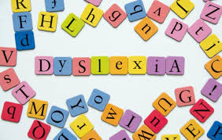
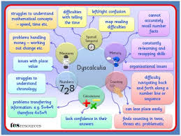
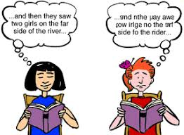
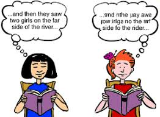

- Dyslexia (Learning disabilities in reading):
-They have two types which are basic reading problems that occur when there is
difficulty understanding the relationship between sounds, letters and words;or Reading comprehension problems occur when there
is an inability to grasp the meaning of words, phrases, and paragraphs.
 
- Dyscalculia: (Learning disabilities in math):
-Learning disabilities in math vary greatly depending on the child’s other strengths and weaknesses.
-A child’s ability to do math will be affected differently by a language learning disability , visual disorder, a difficulty with
sequencing, memory or organization.

- Dyspraxia: (Learning disabilities in motor skills):
-Motor difficulty refers to problems with movement and coordination whether it is with fine motor skills (cutting, writing)
or gross motor skills (running, jumping).
-A motor disability is sometimes referred to as an “output” activity meaning that it relates to the output of information from
the brain.
.jpg)
- Dysgraphia : (Learning disabilities in writing ):
-Learning disabilities in writing can involve the physical act of writing or the mental activity of comprehending and synthesizing
information and people with disgraphia have a difficult time organizing thoughts on a paper.
.jpg) 

- Aphasia/dysphasia: (Learning disabilities in language):
-Language and communication learning disabilities involve the ability to understand or produce spoken language.
-Language is also considered an output activity because it requires organizing thoughts in the brain and calling upon the
right words to verbally explain something or communicate with someone else.
.jpg)
.jpg)